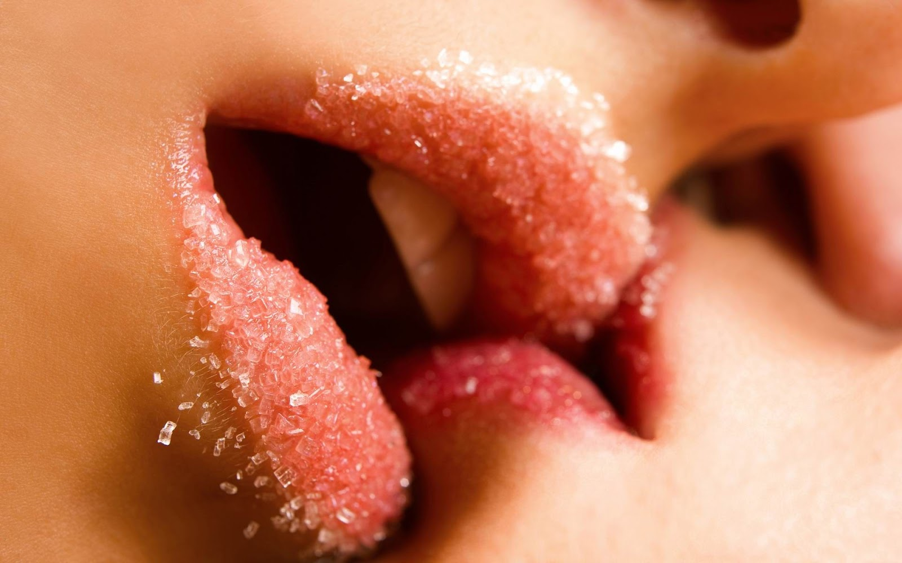

•Beso en la boca: Forma del beso erótico/romántico tradicional en el que se unen los labios de ambas personas, generalmente para reflejar sentimientos de amor, afecto o distintas intenciones sexuales.
•Beso francés: Variante del beso en la boca en el que la lengua de uno o ambos participantes toca los labios o la lengua del otro participante. Su intención es puramente erótica.
•Beso en la mano: Forma del beso en el que se presionan los labios contra las manos de una persona, generalmente para reflejar cortesía o galantería.
•Beso en la mejilla: Una formalidad tradicional utilizada como saludo en distintos países de la cultura occidental en el que se acaricia con los labios la mejilla del otro participante. Puede expresar intenciones eróticas, simple cortesía o admiración.
•Necking: Es una forma de la expresión sexual humana en la que se besa el cuello de una persona con distintas intenciones sexuales.
•Making out: Eufemismo popular para referirse al petting en conjunción con la estimulación sexual con besos en diferentes partes del cuerpo.
•Pico o piquito: Variante del beso en la boca de poca duración.
•Smack: Beso con emisión de sonido.
•Smooch: Beso prolongado acompañado de caricias e interacción con las manos(abrazos, poner manos sobre los hombros, rodear el cuello, caricias en la espalda, honk, etc.).
tipos de besos y formas de besar asi como el significado de los besos.
•Beso de lamida del ombligo:consiga una crema o bebida (yogurt, etc.), viértala sobre el ombligo d esu pareja y proceda a lamer.
•Beso de aro en el ombligo:si su pareja tiene un piercing en su ombligo.
•Beso de algodón dulce:Ponga un pedazo de algodón dulce en la boca y empiece a besar a su pareja. El algodón azucarado se derretirá y sabrá delicioso.
•Beso congelado:experimenten con este beso divertido. Ponga un cubito de hielo en su boca, luego abra la boca y bese a su pareja, pasando el hielo con su lengua. Es un beso francés erótico y sensual con una variante de congelamiento.
•Beso Frustrante:(Para las mujeres) en la mitad de una sesión de besuqueo, cuando su pareja se acerque para besarle, deje que los labios de él apenas toquen los de ella, y rápidamente retraiga su cabeza unos centímetros. haga esto varias veces. Él se sentirá frustrado y hará que la apriete más hasta que finalmente atrape sus labios para obtener el beso deseado.
•Beso Gitano:Ligeramente bese y lama el cuello, luego muévase hacia la oreja. Si ella usa arete, póngaselo en su boca mientras succiona el lóbulo de su oreja.
